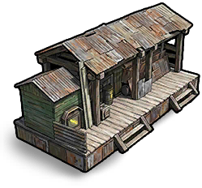

Construction
Objets · ConstructionScierie du clan
Clan Sawmill

Clan Sawmill / ConstructionRecette de fabrication
Recette de fabricationChaque fabrication produit 1 objets. Les matériaux ci-dessous correspondent à une fabrication.


Produits du recyclage
Produits du recyclageDescription de l’objet
Produit du bois automatiquement.\n\nLimite : 1 machine par clan